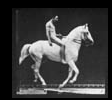

James Reston wrote
in The New York Times (July 7, 1957):
Before the invention of language, men shared a
collective consciousness.
"Languages are stuttering extensions of our five senses, in varying ratios and
wavelengths. An immediate simulation of consciousness would by-pass speech in a kind of
massive extrasensory perception…" (Chapter 13)

Moving pictures introduced the mechanical age to a sense of organic life.
The study of media includes both the micro (psychic) and macro
(social) levels.
A health director . . . reported
this week that a small mouse, which presumably had been watching television, attacked a
little girl and her full-grown cat…. Both mouse and cat survived, and the incident is
recorded here as a reminder that things seem to be changing.
After three
thousand years of explosion, by means of fragmentary and mechanical technologies, the
Western world is imploding. During the mechanical ages we had extended our bodies in
space. Today, after more than a century of electric technology, we have extended our
central nervous system itself in a global embrace, abolishing both space and time as far
as our planet is concerned. Rapidly, we approach the final phase of the extensions of
man—the technological simulation of
consciousness, when the creative process of knowing will be collectively and
corporately extended to the whole of human society, much as we have already extended our
senses and our nerves by the various media. Whether the extension of consciousness, so
long sought by advertisers for
specific products, will be "a good thing" is a question that admits of a wide
solution. There is little possibility of answering such questions about the extensions of
man without considering all of them together. Any extension, whether of skin, hand, or
foot, affects the whole psychic and social complex.
Some of the principal extensions, together with some of their psychic and social consequences, are studied
in this book. Just how little consideration has been given to such matters in the past can
be gathered from the consternation of one of the editors of this book. He noted in dismay
that "seventy-five per cent of your material is new. A successful book cannot venture
to be more than ten per cent new." Such a risk seems quite worth taking at the
present time when the stakes are very high, and the need to understand the effects of the
extensions of man becomes more urgent by the hour.
In the mechanical age now receding, many actions could be taken without too much concern.
Slow movement insured that reactions were delayed for considerable periods of time. Today
the action and the reaction occur almost at the same time. We actually live mythically and
integrally, as it were, but we continue to think in the old, fragmented space and time
patterns of the pre-electric age.
As a storage medium and extension of memory, writing removes man from the existential
here and now, and enables him to contemplate dangerous activities at a safe physical and
psychological distance. Paradoxically it also leads to the illusion of Don Quixote, 'that
print is the criterion of reality.' (GG, p.177)
Western man acquired from the technology of literacy
the power to act without reacting. The advantages of fragmenting himself in this way are
seen in the case of the surgeon who would be quite helpless if he were to become humanly
involved in his operation. We acquired the art of carrying out the most dangerous social
operations with complete detachment. But our detachment
was a posture of noninvolvement. In the electric age, when our central nervous
system is technologically extended to involve us in the whole of mankind and to
incorporate the whole of mankind in us, we necessarily participate, in depth, in the
consequences of our every action. It is no longer possible to adopt the aloof and
dissociated role of the literate Westerner.
It is no longer morally acceptable for the mainstream to
classify and marginalize minorities, i.e. consign them to a special niche, and
dismiss them and their concerns from consciousness.
"in a culture that assigns
roles instead of jobs to people—the dwarf, the skew, the child create their own
spaces. They are not expected to fit into some uniform and repeatable niche that is not
their size anyway." (Chapter 1)
The Theater of the Absurd dramatizes this recent dilemma of Western man, the man of action
who appears not to be involved in the action. Such is the origin and appeal of Samuel
Beckett's clowns. After three thousand years of specialist explosion and of increasing
specialism and alienation in the technological extensions of our bodies, our world has
become compressional by dramatic reversal. As electrically contracted, the globe is no
more than a village. Electric speed in bringing all social and political functions
together in a sudden implosion has heightened human awareness of responsibility to an intense degree. It is
this implosive factor that alters the position of the Negro, the teen-ager, and some other
groups. They can no longer be contained, in the political sense of limited association.
They are now involved in our lives, as we in theirs, thanks to the electric media.
Fragmentary knowledge and viewpoint generated by literacy
and three-dimensional space, have given way to inclusive awareness (traditional wisdom),
i.e. universal knowledge and a consciousness of the human condition.
This is the Age of Anxiety for the reason of the electric implosion that compels
commitment and participation, quite regardless of any "point of view." The
partial and specialized character of the viewpoint, however noble, will not serve at all
in the electric age. At the information level the same upset has occurred with the
substitution of the inclusive image for the mere viewpoint. If the nineteenth century was
the age of the editorial chair, ours is the century of the psychiatrist's couch. As
extension of man the chair is a specialist ablation of the posterior, a sort of ablative
absolute of backside, whereas the couch extends the integral being. The psychiatrist
employs the couch, since it removes the temptation to express private points of view and
obviates the need to rationalize events.
McLuhan's favorite sacrament in the Catholic liturgy was the
Eucharist. Those who are squeamish about religious terminology may substitute the phrase
'Darwinian evolution' for words like 'Christ' and 'God.'
McLuhan's belief that the material world was intelligible repudiated the dualism of
Gnosticism and Manichaeism
and Kant's division of reality into the phenomenal and noumenal.
The aspiration of our time for wholeness, empathy and depth of awareness is a natural
adjunct of electric technology. The age of mechanical industry that preceded us found
vehement assertion of private outlook
the natural mode of expression. Every culture and every age has its favorite model of perception and knowledge that it is
inclined to prescribe for everybody and everything. The mark of our time is its revulsion
against imposed patterns. We are suddenly eager to have things and people declare their
beings totally. There is a deep faith to be found in this new attitude—a faith that
concerns the ultimate harmony of all being.
Such is the faith in which this book has been written. It explores the contours of our own
extended beings in our technologies, seeking the
principle of intelligibility in each of them. In the full confidence that it is
possible to win an understanding of these forms that will bring them into orderly service,
I have looked at them anew, accepting very little of the conventional wisdom concerning
them. One can say of media as Robert Theobald has said of economic depressions:
"There is one additional factor that has helped to control depressions, and that is a
better understanding of their development." Examination of the origin and development
of the individual extensions of man should be preceded by a look at some general aspects
of the media, or extensions of man, beginning with the never-explained numbness that each
extension brings about in the individual and society.